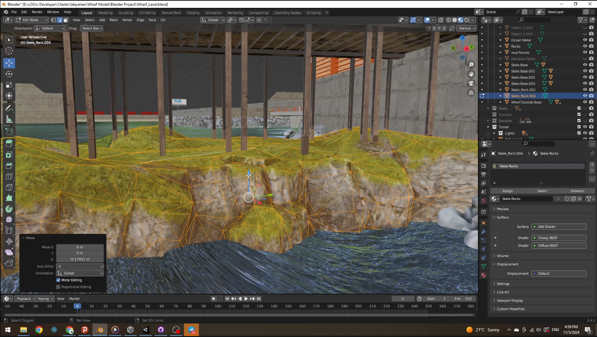
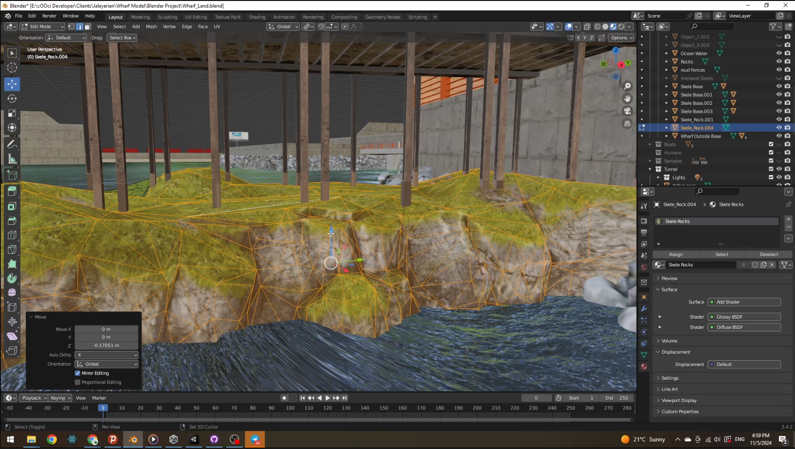

Simple HTML/CSS Site
This is a responsive static site built using HTML5 and modern CSS practices.
 View ProjectBelow are some of the personal and practice projects I've worked on while learning and developing my skills as a web developer.
This is a responsive static site built using HTML5 and modern CSS practices.
 View ProjectAn interactive to-do list built with JavaScript, local storage, and DOM manipulation.
View ProjectA multi-page layout with dark/light theme toggle and reusable components.
View ProjectShowcases audio, video, and iframe embedding with styled controls and accessibility features.
View Media